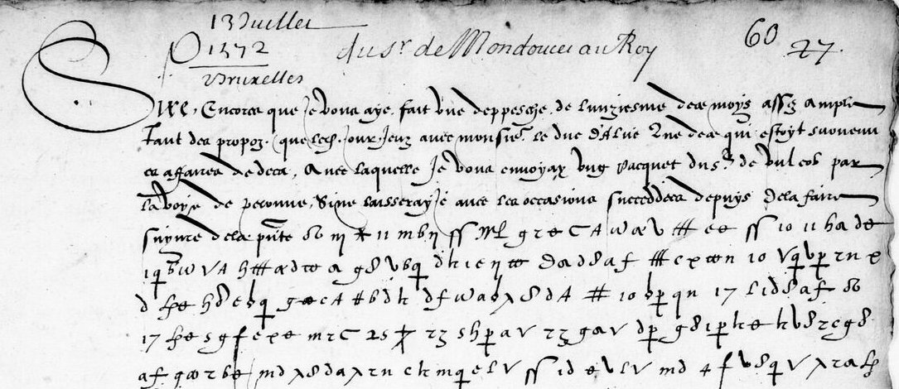

At a glanceKey from adjacent plaintext · partial (86% of the cipher)
- The document
- Claude de Mondoucet’s ciphered despatches to Charles IX from the Low Countries, 1571–74. The target is the 13 July 1572 despatch, with the 1573 letters of 9 September and 4 January.
- Where
- BnF fr. 16127 (original letters of French agents in the Low Countries). The 13 July 1572 leaf, ff. 60–61, has no decipherment anywhere in the volume; it is on no list (Tomokiyo, Schmeh, Dunin).
- The cipher
- One homophonic substitution, one symbol per letter: a 24-letter alphabet, a few digraph symbols and four nulls.
- How it was read
- The 1572 key came from the Court decipherer’s glosses on f. 62r and the full decipherment on f. 64; the 1573 key from the verbatim decipherment of 9 September 1573. Earlier automatic alignments failed because glyph segmentation split letters in two; hand transcription fixed it.
- What it says
- The 4 January 1573 letter, decrypted to about 60% and then found printed in clear in Didier’s 1891 edition, which confirms and completes it.
- Still open
- The 13 July 1572 despatch gives only scattered words (about 1–8% of its symbols) with the 1572 key, which was fitted on a single crib.
01 The sweep and the document
Gallica’s catalogue was queried for diplomatic manuscripts of 1575–1620 absent from Tomokiyo’s pages, and the hits in range checked against his coverage of the League volumes and the reigns of Henri III and IV. Of the residue, fr. 16127 (original letters of French agents in the Low Countries, 1571–94) was fetched entire (from the Gallica PDF after the IIIF service throttled) and examined on contact sheets. Roughly twenty of Mondoucet’s despatches carry cipher, and almost every ciphered leaf is followed, on the next folio or in the margin, by a contemporary decipherment in the Court’s hand. One stands out: 13 July 1572, ff. 60–61, has no decipherment anywhere in the volume. Its date places it four days before the Huguenot relief column under Genlis was destroyed at Saint-Ghislain outside Mons, and six weeks before the massacre of St Bartholomew. Mondoucet’s office was the covert French contact with William of Orange’s revolt that these weeks turned on; the absence of a Court decipherment, in a volume where every other ciphered despatch has one, is why the leaf was chosen.
02 Why the first four alignments failed
Three transcriptions had been made (one by hand at glyph level, two by automatic segmentation and k-means clustering of glyph shapes), and four aligners built and validated on synthetic controls of the same size and shape: hard-EM Viterbi, a consistency beam, a soft-EM banded HMM, and the same with word-signs consuming several letters. The controls recovered 44 of 44 and 56 of 58 symbols. Against the two decipherments that can be checked (the 29 August letter deciphered at f. 9, the 16 July block deciphered at f. 64), every method scored at the shuffled-plaintext baseline.
The clue was a number. On the 16 July pair, which is verbatim where the gloss lets one check it, the automatic segmentation counted 1.3–1.4 connected glyph components per plaintext letter. That was taken at the time as a property of the cipher (heavy nulls, or letters written with more than one separable stroke), and it was what defeated the aligners, since a solver that assumes one glyph maps to one letter cannot align a stream with 35 % too many symbols. But the ratio was measured on the output of the segmentation, the one component never validated against a hand count. Hand transcription of the glossed words settles it: under the f. 62r gloss leur délivrance, the number of pen-lifted glyphs equals the number of letters, and the same holds under pouvez and au 30 and across the 16 July block wherever the f. 64 decipherment fixes the letters. The excess was an artefact: the segmentation split looped d, the long-s with crossbar, and the barred o and q into two components each, and attached dots and bars as separate glyphs. One glyph is one letter. The error was in the first stage of the processing.
03 Building the key by hand from the 16 July crib
The volume contains its own crib. The 16 July 1572 pair (ff. 62–64) is enciphered in the same system and glossed: on f. 62r the Court decipherer wrote several
plaintext words above the cipher (pouvez, leur délivrance, la bruslation, nous maintenant, au 30), and f. 64 (“16 juillet 1572,
déchiffré de la précédente”) gives the whole block in clear, 17 lines and 863 letters. Placing the glossed words fixes about twenty letters at once. Carried into a
HMM alignment of the hand transcription — forward–backward and Viterbi, banded around the glossed words, with a per-glyph null rate, they give a table of homophone counts per
glyph and a small null set { * , C , mq , j }. The cipher is homophonic with a 24-letter early-modern alphabet (i=j, u=v), a few
digraph symbols (the symbol transcribed 23 = qu, crossed-phi = ll), and those four nulls. Decryption is then a decoding problem: a decoder
(keeping the best 300 partial texts, width 300) combines, per glyph, the probability of each letter from the aligned counts with the transition probability from a 5-gram model of sixteenth-century French, and
emits a null marker where even the best letter is improbable.
“… leur delivrance des espagnols a ce moyen …”
and the surrounding lines decode continuously with it (“… penser que le roi lui a prester ses affaires …”, “… envoyer afin … clement adverti du premier … de son armée assemblée de laquelle aura …”, “… prelate teste en flandres …”). The gloss match shows the key is partly right; the re-check in §04 puts it at about 60 % of letters on this block, the one it was fitted on.04 The 13 July despatch

The despatch is only partly enciphered. Clear-text bands carry the connective narrative and the whole close, and the cipher is reserved for the sensitive matter, as usual for a resident who trusted the courier with the rest. The clear bands need no key. On f. 60v, a Spanish informant’s report:
J’ay esté asseuré par Espaignol mesme qui cy vient qu’il n’y a pas troys mil hommes de pied & cinq cens chevaux cy tout. Toutesfois ilz demourent encores là arrestez. Et dit on que du costé de Mastricq se marche quelques regymens d’allemans nouvellement leuez…
f. 61r closes in clear: Sire je supplie le Createur qu’il vous donne … très longue vie. De Bruxelles ce [Ve] jour de Juillet 1572, signed de Mondoucet, over vostre treshumble tresobeyssant et tresaffectionné serviteur et subiect.
The ciphered lines (22 on f. 60r, one on f. 60v, six on f. 61r) decode in stretches with the same key. They speak of religieuse, Espaigne, the saint père and the pape, Escosse, Angleterre, troupes de terre, catholique, ministres, liberté, garnison; f. 61r gives … le prince … service du roi, … parenté entre les autres cour[s], … avaient esté capitulé … réduit.
Re-checked 21 September 2026: these words overstate the decryption. Re-marking the open alpha (= r) on the 13 July strips and decoding again with the 1572 key, the 1573 key and a merged key gives no real gain. On the 16 July control block the 1572 key scores only about 60 % of letters, and that block is the one it was fitted on. Counted strictly, word-divided output that reads as French sense covers about 1 % of the 1,082 cipher glyphs of 13 July, and about 8 % counted leniently. The words above are the language model's fill as much as the cipher's. The despatch is not deciphered: the leaves are legible, and what is missing is a better 1572 key, for which the single 863-letter crib is too short.
05 The 1573 letters: 9 September deciphered, 4 January in print
The catalogue listed two 1573 letters from Antwerp and Amsterdam as having no full reading. On the leaves, the 9 September 1573 letter (Amsterdam; cipher ff. 135r–137v) has a complete Court decipherment on ff. 139r–141r (“deschiffré”), and it is verbatim: a hard-EM alignment of 4,735 hand-transcribed glyphs against it runs line for line with a glyph-to-letter ratio of 0.91, the shortfall being word signs such as dict, faict, monsieur. The alignment gives the 1573 key, about 55 signs, the 1572 system with the same homophones.
The 4 January 1573 letter (Antwerp; cipher f. 126v, 4 lines, f. 127r, 31 lines, f. 127v, 4 lines) has no decipherment anywhere in the volume, only four interlinear glosses on f. 127r (hambourg, Lan…, and two unsure). It was decrypted with the 9 September key and the French 5-gram decoder. The control: a key rebuilt without block 1 of 9 September decodes that block blind at 77.5 % of letters. Re-transcribing every 4 January line on the strips corrected 20 glyphs, and splitting the round a from the open alpha with a crossing tail, which the first transcription had merged, showed that the alpha is always r and the round a never is (l, y, i); the control rose to 79.0 %. The gloss hambourg decoded in place, and about 55–60 % of the 4 January letters gave sense, among them “seize ou dix huict”, “soubz ombre de chercher parti”, “desavantaige … qu’il fera”, “l’Angleterre avoit … tenir cent …”, “[H]ambourg, où on croit debvoir servir pareil”.
The text was then found in print. Mondoucet kept a register of his despatches from September 1572 (Bibliothèque de Reims), and L. Didier printed it in 1891: the letter of 4 January 1573 is on pp. 141–142 of volume 1, in clear, ending “D’Anvers, ce IIIIe jour de janvier 1573”. The ciphered part is:
… il se donnoit fort secrètement wartgueld des costez de Collongne, Francfort, Spire et autres villes, sans qu’il se puisse savoir de quelle part; et aultres encores, ne voullans estre descouvertz, prenent aultre voye, donnans argent aux collonnelz pour entretenir leurs reistres-mestres et gentilzhommes, et lesdictz reistres-mestres entretenans leurs soldatz particulliers. Aussi, que les villes de [Hesse?], Strasbourg et aultres faisoient levées de gens; outre plus, qu’il estoit depuis naguières arrivé à Collongne seize ou dix huict cappitaines venans de Suède et Dannemarch … De tout ce qui se passera j’espère en donner toute lumyère à V. Maté par le rapport que m’en fera ung cappitaine allemand … qui m’a semblé estre plus propre que aultre, par ce que, soubz umbre de chercher party, il descouvrira tout ce qui se fait … J’ay seu que Monsr le duc d’Alve avoit pris ceste forme de wartgueld avec le duc de Brunsvick … et croy qu’il aura fait le semblable à l’endroit du duc de Lauembourg de Saxe … Davantaige, Sire, je ne veulx oublier de vous advertir comme j’ay [apprins] que la royne d’Angleterre avoit fait tenir cent mil escuz à Hambourg, que l’on croyt debvoir servir pour pareil effect. Estant en ceste ville, j’ay descouvert qu’il y avoit quelque temps qu’un certain évesque de Hirlande y séjournoit, quy y est entretenu par ledict sieur duc, avec lequel il conduit la pratique dudict pays de Hirlande …
(Didier 1891, i, 141–142; spelling normalised from the OCR where it was garbled.) Every stretch the decoder had given stands in the printed text, and the lines it had not decrypted are now filled: Louis of Nassau’s secret wartgeld retainers, captains from Sweden and Denmark at Cologne, a German captain sent as a spy, Alba’s own wartgeld with Brunswick and Saxe-Lauenburg (the gloss Lan…), English money at Hamburg, and an Irish bishop kept at Antwerp by Alba for a design on Ireland (the decoder’s “de l’Irlande” in l. 31). The edition was in the page’s sources from the start but was not opened until after the ciphertext-only passes, so those passes are an independent partial decryption; the text of 4 January is the edition’s. The 13 July 1572 despatch is not in Didier: the register begins on 6 September 1572, and Didier’s own inventory of fr. 16127 calls that letter “chiffrée et en grande partie sans déchiffrement”.
06 The lesson
A ciphered despatch that four validated aligners could not align is an ordinary homophonic substitution; what defeated the solvers was an unvalidated automatic segmentation that produced a 1.3–1.4 glyph-per-letter ratio and broke the one-to-one mapping. The lesson: check a glyph-per-letter ratio taken from an automatic segmentation against a hand count on a passage of known plaintext before relying on it. What remains is a clean retranscription of the ciphered lines to a fixed glyph accuracy and the collation of the clear bands with the other fr. 16127 letters. A second lesson came from 1573: open the edition before decoding. Didier printed the 4 January letter in clear, and the page’s sources had cited it all along.
Full texts
The transcription and the decryption of every document on this page, so that the reading can be used and checked. Short files are shown here; all are in the repository.
Amsterdam, 9 Sept 1573, ff. 135-137 (Court decipherment ff. 139-141)
Mondoucet reports to Charles IX on Alba's siege of Alkmaar (it can be assaulted from one place only), Alba's recall by the King of Spain, Medinaceli, the King of Poland's passage and Danzig, and a letter from France predicting things greater than St Bartholomew's Day. The Court's verbatim decipherment on ff. 139-141 was typed and aligned against the cipher; the tail (f. 137v against f. 141r) was compared by length only and is not transcribed.
Transcription
# f.135r (c280), 9 Sept 1573, cipher block 1 (between clear '...par troys endroictz.' and clear 'Je ne vous puys dire autre chose'). Hand transcription 18 Sept 2026. 01: T y / O / d h a d k v d e m d / * 02: w d e / f g b d v H b e d / x T a d h / O y v l S a e d / S b / x T a / m y / p H / O b d k / y / t o q k d S n / m y / J d P 03: n k d / w n / # d S a v / H O g b / P d Q / J / 17 / S h q / w d d P / d k m a l b v / S b / d k / f b y O 04: # b d k / d O v a l b v d / G n k v / * / k a / # b S / P g h v / 30 / m y / o a d O / f z d / * / J i b y 05: a / G g a / f z d Q / z S b v / m y / z b ff n O / m d / s a l b k v / * / L / H / y O v d / * / d O v g k v 06: w a / o b d e / s l a v d M b d n / * / m c / k g v S / y / * / S b / g a v b M d i d / m y / T 3 / O d Q H 07: G g p / H d O d / m d / H O a / H T v g / f x S d Q / m y / H S O a / J H / f g G w / * / m y 08: d w a / d e t o G l m d / G n k v / p l q d / T 3 A k d / w d / # d S P d l k v / w d / f l S Q b a / a S e 09: p H S a v y / S b H O / T b S y d O / a g P h k O / H T d f / k d / m b M b f S a v d / v g k v / 17 10: d g S / H / f g S O d / m d O / d q n d b O / x T a / a / v l b d g c k v / x T d a x d S n / s l a v y / * 11: J / 16 / d O v y / H O / f z d / G b O / x l G w S A / 17 / v d / M d / 24 / k d / f n O d / v d O 12: q a g k m d / * / m y
Transcription
# f.135v (c281), 9 Sept 1573 cipher block 2 opening: 16 lines after clear '...Dont je me dist quil ne doubtoit point'. Hand transcription 18 Sept 2026. 01: T y / * / O 02: [par] / l e v / m y / x d g d H k v / O d g S / f l S w / m d / q n d b O / 16 / f n O v d / x T d y / P n / * 03: w d / y p b q b l e / * / T 3 / k d O a / p l S a m a l b v / s b d Q / S b / T 3 / k d s g S a v / x T e / f b i x 04: S b T / 16 a S a v d a d Q / S k d / H a / x T d / O S A / H m d / 17 / P k d / s d k n v y / * / g / H S d / f x T d O 05: g T a v y O / # a l w l b O / w p H b e O / w d / f a g d k v n / T / d O / x T d a A / 10 / H / t o s d Q G H a 06: 16 / H / m d T d Q v b a / m d / O a / # d S / m c / P b / P b e v d / J 10 / P d l b O / d k a S a / m y T 07: m d / # y k m a d / H / f z d G b e / m y / * / 11 / m y 4 / q l a g S G n / * / S b / d k x T b a / 10 / t o l b 08: e S d Q H a / P d h g k v / H / # a l w l b O / m y / J d l o n a / a y / T * / O d Q / i d 10 a S a / C A 09: J / f n O v l b v / m l e x T d O / H o b e d O b / b d k v / T 3 / O d k / P l S P l b v g P d Q 10: H x T b a / d p m y / G n / y O # b e m d v / m y / J / f n O v l b v / o b d k / 24 / f z b O d m y 11: T 3 / m d O d a l b v / H / T 8 / S b / J / G n w O / w d O / d p H T l b v / y f d S / m d O / b O / m d 12: q l a / + / * / m y / 17 / H O d x d P n O / b a a S a / G g k m l b v / T / T 3 / H T l b v / m l y O k g S 13: g k v / g w d A / p b e q S n / G n k v / v q H T g d / P d / T g / S b / T 3 / d l b v / m y / v d / G w O 14: T 3 / w g P H O v / y # l O d Q / d k / d O w g d q k d / * / l S l / p H T l b v / o b d k / g M H d y 15: m d / a S a / d k q S a v y O / k d / q b i d O / m d / G w l q / v g k i d / m y / O / x T d O v g k O 16: f n * / P n O / w d / m d f g / d k / p d O v g v / J 10 / P d / l b O / d p / k d / H O / # l S P l b v
Transcription
# f.136r (c282), 9 Sept 1573 cipher block 2, page 1 (31 lines). Hand transcription 18 Sept 2026. 01: z H o g k m b q n Q / T / 10 / k d / * / O g a / k a k n / # d b O / d / T q d a / f n T 3 / d k O d Q H / S b O 02: f n O v / H / w l b O O l e / T 3 / # d S a v / g T l b Q / m d O l e / # g d / O g d Q d / * / d S a / H b 03: g d e O a / # g a / a d Q / T y / l S / S b d k / O d p H / d k / p d k v d e / m d / G n k v / m d / w d G l S y 04: a / d k / f l y O / # g a / m d / f g / * / S b / m d / k d O / S b T a d / S h q / y q a d / G n k v / J d H a l 05: d k m y / v d k m d / H g / S l b Q / d / d / c e S / l b d / m y / d / f a / 17 / m y / + / * / P T / 17 / H x T d p Q 06: d p / m d / f a g d y / * / f n T 3 / S d S a v / J a b e / O d S P d / * / f a H / # y O / 16 / H b / m d 07: f n q b S P d a / k d / G n k v / * / m y / S b / a / y O d O v d Q / H d e O a / T 3 / H / b / # g a / f d m d T 08: g k v / T y / g H S a v y O / T y O / x T l a / J O d k w e c b v / m y / l l A / w n O / # a b 09: e f d w g S a f / w d Q / T b v d S a O / S b / T 8 / d e v a b e O d / x T d O / v b d q n k v / 16 10: f n a v g d T y / T 3 / k d O d Q H / # g O / d k f l y O / d f a / 7 / G l b O / m y / T / O a d S a m 11: w g S a v y / f l O v d / G n / w d / w g h k v / w d O / m d / p b O d Q H v b b e O / g m S d k b Q 12: s b e m d n O / d k / p H d Q / T d k / P d S a v / 30 / m l S o v d Q / n T / o b d k / v b O v / l e d k / # l S 13: M g / 30 / m y / T 8 / f d a v g d k / d S q d / G n k v / * / 17 / f n / J d k v d e / m A / * / T 3 / S / T g 14: t o w v d / H # n O / g T l b Q / S d T / m y / p d f w a l b v / m d / f n O / v d / g a / G n d / m d G d Q 15: S b / w a d / H n / # l S m g / X g T / l S T a b a / f n / # l a v / m y / w d m y / w g / f z d / G b k d Q 16: d k g k T d a O / 16 / g m S b O d a / H S a f / g M H d y O / q d k n a g / H n O / m d / # H b O 17: l S / H / + / m d / G n w O e d / * / m y / w d / v Q l S P d / # y O d k v d / G n k v / * / S b / O d b O 18: g m S d a v a / J H O d O v g v A / w O b e v / t o S l f x T d A / m y / x T a d / f n x T a / G d 19: Q / T 8 / d T q d a / m d O b e / # g a v d / G n k v / m y / J / g S a v y / f z b O d / * / T d p d m y 20: O d e S a H a / J g S a v y O / G b e v C / J T / 24 / m b e / d b H z / m d / G g k m b O d m y 21: m b b v / # y k m a d / H / O d Q / G n k v / J L A / f n O / w d d q k d S a O / d f a / E m 22: Q B l / S O v T G n / 30 / H S / k l S P d g S / # a b e i d / m d O w g d g k d / m y / O d a b e / T Q f z 23: H a Q d / T 3 d k / H / m y T / S b / J / G n O / E y d O b e / H / S d S a v / # y / k w y / w d O / C A d O v 24: g v A / T d k x T l a / d p O d / v a l S / P d / M g / * / T m d / 24 / y O d w g / d g k i d / e m y 25: w * d / M b f S a v d / # b d k / q a g k m d / m y / H # n O / v l S O / f d O / # a l w b O / l 26: O d y / * / d p d k v a H / O d Q / H O / g M H d y O / m c / D D / T / G n / m d / G g k m g k v 27: w a / d d k g T l b O / # l b e v / m d / k l S P d / H n O / m y / O d a x T l a / 10 / k d / a S a / s d a A 28: g S a v y / * / y O / # b e i d / w d k l e / J a b e / G d f v l b v / L d / # d b k d / m a d O v g O 29: a b Q / 24 / v a g h k x T b a b v d / S b / H / y / # b O / m y / p d O w d a H k / i d / d O v g h v / * / m y 30: v y O o b q n / * / m d / a d a / T d l b Q / o b d k v l b O v / S b / J / H S O d a / w a S O l e / d l e 31: q d l b v / H S a f / # y w g a H v b s A / 16 / H / # g a v d / G n k v / m S Q b a / m d / m y T
Transcription
# f.136v (c283), 9 Sept 1573 cipher block 2, page 2 (30 lines; clear 'Monseigneur' in l.8). Hand transcription 18 Sept 2026. 01: # l f P e k q e d / T g / M l / H S / S / m d / C / y / # l b O / d p / G n / C / m d O v m y / J / n d # 02: d b O / 3 / d l S a O / d p / H T l b v / T d S P k d / b y / d O f a b w v d / m d / s a g k d / m y 03: w g a / m d f g / * / 17 / S h q / T 3 / v b d k v / d O v y / s l a v / d e v d y / w d / H S / S / m d / f n 04: O v d / y a b q b l e m y / * / 17 / g / 24 / x T d / f n / d a / G g k m d / J / d g / G H b O / 24 / D D / m y 05: k d s d S v / O a / # g S P a d / * / m y / O a / f g p H / G b v d S O d / T L / H / # d S w a d / S b 06: H O / T b ff n O / T 8 / Q S b k d n O / m y / S b / N / # a g a k d / m d / G g p t o v d k O / T 3 d m y 07: b e f a l b Q o a d m y / * / H T d f o d S / f l S w / m g S a v y O / # g a / v b f T p H a b v d A 08: N / m d O / G g P H / m b d O / m d / m y / [monseigneur] / T H / + / # a b e i d / m c / f l e m d g 09: G l a v / m d / J / T s / m d / p b e q T d S b P n / * / T / S b g S a v y O / T S b / J H S / y O v 10: d / d a C / J / m d S g k v / 24 / s b e Q / m d / G l b O / m c / O d / f d / G o a d / * / w a l / f z b e g 11: l k a S d / M g / H m d S d k b Q / f z b O d w / T 8 / g m G b a H / o a d O / S b / T 8 / q a g k m d O 12: J y / 24 / d l b S a k d n / * / O g d e v o d Q v z d / p d / G O a / m y T / d k x T O a / d p G n y 13: w d O v / m y / T 3 / G d f v a l b v / L d / # d b k d m y / * / S b / m d / H b Q d k i d / m d / # d k d l 14: v y a / m y / * / 16 / m d O / f l S T a b Q / f n / J i d O v / m y / S b / G n O w d O / J H / # d a O 15: l Q / H d Q d / x T a / H d O / f a b w v d / 24 / C d / * / b / m y / S b d k v / w l S P d k v / d k / f n 16: # H b O / m y T / d O v g k v / S k q / m d / f n S a f / x T a / G g k b d / m y / H O g M H d y O / m d 17: 24 / C d / y a b q b l e m y / * / H x T d p d a / S / t o w / v d / w g v a H b d Q / S b / a S a / d k / 30 18: t o S d O d Q / 24 / T d Q / b v c / 17 / s l a / f n / * / 16 / p H d g k v / O d S n / d k g m S / d a v b Q 19: 16 / G Q / d / d O v d m y / * / S b / H T / f g O / T 3 / k d / H / # * S b O d / H T l b Q / T 3 / d k m b g d Q 20: H / H / k l G / * / 16 / H / 30 / # y k m a d / # g a / m d / p H / * / m y / d k s b e / d p / C / T 3 / * 21: # a d T l b v / m y / * / T / g m S d k b a / T k d / q a g k m d / Q S b k d / H 4 / a b O g d P n 22: T / # a b e / f O w g / P n / G n k v / O a / + / m d / # l P e k q k d / n e / # g a v / m y T 23: S b / C / m d / T 8 Q / T 3 / O d w o g / z b v / q a g h m d / G n k v / J 4 / G g d d O v d / m y / k d 24: # a d k v / * / g S a v y / q h a / m d / H O g / # d a / O b q n / x T d / P n / k d / S / * / m g 25: O S Q / 24 / x T d / P n / l k / # l S M e b v g v d / G w v d Q / * / m y / 10 / k d / G d / Z c f v a H 26: a w l b e v / O d y / * / T 8 / g S H k v / d k / m d O f l S a O / w d Q / v l S O / H O / # Q w l O 27: f a / m d / w d S O / m y / H O / y G d f v g h k v / H S o b e / d T q d / G n k v / S b / O g d k d / * 28: t o O d / m d / a H v b l e / m d / 4 / G g d d O v d / m y / T 10 / m y / 11 / m d a H a / O d S P d / G n k v 29: J 10 s d a A / L f n z 3 / G d O v l b v / # l a O d O a d / m y / 16 / w g T l b Q / f d / # d a 30: O l Q H d Q d / * / f n / J 10 k d / # d S A / S b / m y / 16 / l O v d Q v d / P n O / l b l b e S b
Transcription
# f.137r (c284), 9 Sept 1573 cipher, page 3?; hand transcription 18 Sept 2026. '/' word gap, '.' dot. # alphabet: d=upright delta-d G=reversed d S=tall s-hook J=double long s l=tall stroke b='6' v=root-v a=alpha # y=eta O=barred o o=plain o w=omega x=lambda T=tau z=zeta 3=ezh *=crossed x #=triple bar +=dagger t=t-shaped # Q=q with dagger P=p with cross H=long-s+h bb=barred b D=barred d B=double loop X=chi C=C A=A M=M Z='2'-shape 01: g h O / m d / p d k v n k w d / G n k v . / m d / C . / T s + . / T y / p d O x T d / ff n O / d O v g k v y 02: d + f a b w v d O / 17 . S k Q * / v d p / z b ff n . / * . / d k Q / S q d / m c / # g O d l e y 03: T d P h d m d o S l b v / T S f n / G n k v / f a l b y . / * . / d b / J / + d d O w d Q / l b O / y / J / * 04: G g O / d O v d / m b q n a l b v / O a / o b e / l a / m y / * / h . / v l S v n O / f z b O d w / T y 05: # a d h g e v O a / f b S Q S q d S O d G n k v . / h . / v z d / G b e / d k / 24 / G g d e y 06: J / 24 / D D / y / v l S a e d a l b v / o b d e V l O / v / d k O g / # / y G b d y / O w p h e m 07: d S Q / m y / T d b / z 3 . / h d / 11 / d O v l b v / o d / O l b e q . / * . / m g S a v y / q h a m d / * y 08: O d / k l e / m d / p h G b v b d / m d / S l A / w S o d d v A / * / d k / p d S a / z g d / O g k v . 09: q m G d e b O v y a / 24 / d S O v b i d / S b / 24 * / # d G v d / t o G n / 11 / S g d / v d O 10: x T a d / m y / f n / x T a h / [tousjours] / * / G g d e v d h S / m / 10 / S b / P l A / # y / m d / f n O 11: d S a O . / T y / J / h . / # g a v d / G n k v / m d / S Q b a / m d / # / l f / a k q h d / T S b / 24 . 12: t o b l e f r b l e / m g G d v b d / m d / f n / q a g h m / * / Q b a g S / G n * . / h 24 D D g . 13: w l S # l b v / # a S O v l O v . / w c a S b Q / S p d O v g / o a b # d / : n k v / m y / * . 14: m d / f n / y # l O / J h O l e / t o v a h d y / * / y . / S b / 16 / T d l b Q / O a / 10 / # l S m 15: l b O / v b a d Q / m d / a S a / f n z 3 . / O g T l b v . / m d / 24 / y O l * p S i v b l e / m y / * / y . 16: w a b O d h 24 / m d d / X c / m d / s a h e f s l a v / y / 10 / a S a C A / J d g T l b O 17: d k v d h / m d / J h O / # a l e i d O / w d O * . / v l b d k v / g B l a / m d / A w d / p d S a . 18: m b q n Q / # g O h S q d / m y / h d T O a / x T g T l b v / S . f . * / m l e v d p / G n / m d O v . 19: h d O q P c b Q / a b d h O / y / h a / G n O / Z d O / x T d / f n / s S O v . / w d / # g a d n . 20: * / y / O / z 3 . / f a l b c b v / y / z 3 . / a / h T a l b a l b v / m d O . / w d M b f S a v d A / * / [pax] 21: l e . / s e . / y / 10 / O C h a / J / w d / # d b O / w d S / m d / v d / G w w . / d + / h S . / m d O . 22: m d / bb n O f z d O . / d k / S * . / 16 / H O / 30 / f a l b O v y . / S b / v Q S T d a / O d Q / H C y 23: # q # q d q d . / * / T h x T o a / 10 / a S a / C A / J / g d # a / d a h d O / v l b v / # g O . 24: o b d k y O b a S / y / O d p / # y h w a l b v / 24 / v d m d . / l S / 24 / G d Q * / y 25: 24 x T d f n / d O v l b v / 24 / y / 28 / O d S y . / * / y . / 24 / y / 28 / h d O d n . / * T / H f z . 26: d G b e / H . / 28 / f l S a v Q T . / S b h . / G l b e q O / m d / s a h a A / y . / f n / z 3 . / G n . / t o 27: s d a G q * T . / # l S a T d p / C d p / J a b e / s d d S O v / g O O d S y / m d / w g h / O d f x . 28: T S b / p l O a O / 10 / a S a / t o w v h a / p g w d S Q / h e i d / J . / a b e / d k g T l b v / y . / * . / g . 29: S b / J k l b S Q d . / f n / G n k v . / d k g T l b v / # a b O d . / h . / f z h . / O v d a g d e / m d / 24 C d .
Decryption
# f.139r lines 1-10 (c288): Court decipherment of 9 Sept 1573 block 1 (cipher f.135r). Opening words repeat the clear text before the cipher. 01: mais iay entendu dun cappitaine 02: qui en est retourne et qui la bien recogneue quelle ne se peult 03: assaillir que par ung seul endroict et encores bien estroictement ny pouvant 04: les bresches pour y marcher huict hommes de front toutes 05: restes estans si bien fortiffiez de nature et artiffice quil sera 06: mal aise de les attacquer aussi que le camp est si incommodement 07: loge quilz ne se peuvent secourir lun lautre et les vivres y allans 08: avecques toute difficulte tant par eaue a cause des ennemis qui y tiennent 09: quelque fort que pour estre les chemins rompus par terre la 10: necessite y est grande
Decryption
# f.139r l.11 to f.140v (c288-291): Court decipherment of 9 Sept 1573 block 2 (cipher f.136r-137r). Read 18 Sept 2026, [..] uncertain. 11: dont il me dict quil ne scavoit partir mais y ayant beaucoup 12: demeurent sur les bras pour ceste querelle de religion quil ne se 13: vouldroit fier et quil ne fault quun coquin pour luy tirer une 14: harquebuzade par une fenestre avecques aultres propos et quilz de 15: le confirmay pour la conjecture de sa bonne volunte que le bruit en 16: luy de prendre le chemin par ce royaume et a quoy je 17: continueray mon propos sur ce je luy dis que cestoit donques 18: a bon escient quil sen vouloit aller a quoy il me respondist quouy 19: estoit bien la chose quil desiroit le plus et que mesmes il avoit 20: receu les lettres du roy catholique par lesquelles il luy mandoit 21: que maintenant il avoit assez longuement travaille et quil estoit temps 22: quil sallast reposer en espaigne ou il avoit bien assez de luy 23: en aultres negoces dimportance mais questant accordees en 24: lestat que je les voiois il ne les pouvoit habandonner je ne 25: scay si ne se pourra juger ce quil en sera et si cest le soubcon quil 26: peult avoir de son passage qui le faict ainsi parler ou bien si la 27: lentendement de lennemi encores par deca et de ne suivre ung reglement 28: quon entend avoir este envoie icy par le roy catholique par lequel 29: il declare ce quil veult que lon suive icy apres pour le 30: faict de ce gouvernement et y resider ainsi quil a faict par cidevant 31: a aultres mais quoy que ce soit tous ses principaux serviteurs sont 32: plus interesses tiennent pour certain quil ne sera pas encores icy 33: deux mois et luy aultre costere mesmes sont des deliberations 34: advenir fondees en lair en voulloir ledict retz bien tost on en pourra 35: faire plus certain jugement par ce pendant quil faict compte apres 36: avoir veu lexploict de ceste armee de mer et si elle pourra ouvrir le 37: port de sa homine en anvers pour adviser aux affaires generalles 38: du pais ou le duc de medina se trouve presentement et suis 39: adverty que les estatz de son conseil qui est ce qui me faict 40: plus juger de ce partement que aultre chose il est bien vray 41: que aultres mesmes dict que la dom jehan de mendoza doibt 42: prendre le serment que tous ces seigneurs icy ont accoustume de 43: au nouveau prince despaigne selon la charge quil en a et que 44: mesmes on luy veult prendre desdictz estatz en quoy il y trouvera 45: de la resistance et difficulte bien grande apres tous ces 46: propos sire il entra sur les affaires de france me demandant 47: si jen avois point de nouvelles sur quoy je ne luy fis aultre 48: responce sinon que lon mettoit toute peine de y establir la 49: tranquillite et le repos lesperance estant tres bonne de le veoir 50: bien tost et que au surplus lon songeoit aux preparatifz pour 51: le partement du roy de pollogne quant au faict dudict repos il me 52: dict que depuis trois jours il avoit veu une lettre escripte de france 53: par dela par ung qui tenoit estre fort interesse au faict de ceste 54: religion par laquelle il mandoit que jamais la france ne fust si 55: pauvre et si calamiteuse tout le peuple et les villes plus ruinees et tout 56: plaine de mal contens quil est incroiable avecques beaucoup daultres 57: particularitez touchant les malladies de monseigneur le duc prince 58: de conde mort de monsieur de longueville et aultres et 59: au reste il dict avant la fin de ce mois de le veoir prochain on 60: verra advenir choses plus remarcables et plus grandes que la journee 61: saint barthelemy en quoy il me dict quil mettroit toute peine et 62: diligence de parvenir pour descouvrir ce que cest et mesmes que 63: le personnage qui a escript la lettre venoit dernierement en ce pais et estoit 64: lung de ceulx qui manioient les affaires de la religion lequel il 65: faict compte de attraper et luy en faire confesser la verite par 66: force pour laquelle chose en advertir vostre majeste pourra 67: quil ne le puisse avoir quil ne donnera le nom pour les 68: plus grandes parolles en fin il dict quil prevoioit advenir 69: une grande ruine en vostre royaume principallement si le roy 70: de pollogne en part et dict de plus quil sesbahissoit 71: grandement que vostre majeste ne prenoit aultre garde a sa 72: personne quelle ne faict sur laquelle lon pourroit 73: attenter je ne me arresteray point plus avant a 74: discourir sur tous les propos ny dessus les remonstrances 75: au bon jugement et sage consideration de vostre majeste je 76: vous diray seullement que je feis tout ce quil mestoit possible pour 77: remonstrer questoit ce personnage et ce que je peus et pour oster
Decryption
# f.140v (c291), Court decipherment of the 9 Sept 1573 letter, read 18 Sept 2026; [?] unsure 01: ions de lentendement dung roy dont lesquelles estant escriptes par 02: ung tel homme enrage de passion il ne debvoit nullement 03: croire et que jesperois que vostre majeste donneroit si bon ordre 04: a toutes choses tenant si couragieusement le timon en la main 05: que la france retourneroit bien tost en sa premiere splendeur 06: et qu il ne vous estoit besoing d aultres gardes sinon de l amitie de 07: voz subiectz en leur faisant administrer la iustice et la protection 08: vous faictes qui est ce qui a tousiours maintenu vous et voz predecesseurs il m asseura 09: que le partement du roy de pollogne et la consommation d amitie 10: de ce grand roy mesme a la france pourroit plustost servir a 11: l establissement de ce repos que a son contraire et pour veoir si je 12: pourrois tirer de luy ce qu il scavoit de la resolution prinse a la 13: diette de francfort je luy dis que j avois entendu que les 14: princes s estoient accordez de luy donner passage ainsi qu avoit 15: faict l empereur dont il me dict ne scavoir riens ny 16: mesmes qu elle fust separee mais qu il croioit qu il y auroit 17: des difficultez je scay toutesfois pour le temps il a faict 18: dadresser en allemaigne pour les secretz et commodite sur 19: ledict passage a quoy je luy dis aussi qu il m estoit 20: par bien resolu s il prendroit la terre ou la mer laquelle 21: il estoit la plus seure et a moins de frais ce qu il me 22: confirma pourveu dict il que l on fust asseure de 23: donsicq et lors je luy contay l asseurance que l on en 24: avoit et que nouvellement on avoit prise le chasteau de
Antwerp, 4 Jan 1573, ff. 126v-127v: project's ciphertext-only decode
Mondoucet's report from Antwerp on German captains raising men, Alba's wartgeld with the Duke of Brunswick and Saxe-Lauenburg, a hundred thousand crowns at Hamburg, and an Irish bishop kept at Antwerp by Alba for the Ireland practice. No contemporary decipherment survives; the project decoded it ciphertext-only to about 55-60% of letters.
Transcription
# 4 Jan 1573 (Antwerp), Mondoucet -> Charles IX: cipher f.126v (c263, 4 lines after clear text), f.127r (c264, 31 lines), f.127v (c265, 4 lines). # NO decipherment anywhere in the volume. Hand transcription 18 Sept 2026, same alphabet as f137r.txt. [..] clear words on the leaf. # f.127r interlinear glosses in the Court hand: over l.19 '?nuactynch' (unsure), over l.22 'Lan..', between l.25/26 'hambourg', over l.27 '?couillart'. # v2 21 Sept 2026: strip re-check (s263/s264/s265) of the v1 transcription; changes listed in trailing '# v2:' comments. # v3 21 Sept 2026: a/alpha split from the strips: a = round closed a, α = open alpha with crossing tail (key1573_split.json). Doubtful calls: A2 barred n-a, 06 n a c, 13 d y a, 23 T a f; 25 first sign may be omega-like, kept a. # v4 21 Sept 2026: constrained pass (key1573_split2.json): A2 n a->n α, 06 n a c->n α c, 13 d y α->d y a, 23 T a f->T α f; each image-ambiguous and raises the decode score. Rejected: 21 l->b, 22 d->b, 26 l->b, 06 g->z (score down), 24 l->d (score up, reading worse). A1: [artgued] m d O / m y / * / f l O v d A / m d / f l P l e q k d / y / s Q H e i s l α v * T A2: O / # O y / * / S b / H S a v y O / S b P n α . / [saua] / T 3 / O d / # S b O n / w g S l b Q / m d / x T d A3: P n / # H α v / S b g S a v y O / d e f l y O / k d / p l d / P g k O / d O v y / m d O / f l S p d α s A4: # y / k e d e v / H S a v y / S l / b d / m b q H e v / H α q d e v / H S a f / f l P l q n a A # v2: A2 inserted clear-hand group [saua] (bold, not a cipher sign) before T 3; A4 inserted b (tall 6) in m b q H e v 01: 16 m y d e v y v d k O Q a d S α O / y d O v y O / G n O v y O / S b / Q d e v d a A z b ff n O # v2: 01 inserted d (upright stroke with foot bowl) in y d O v y O, cf. 02 y d O v y 02: S b / L e / J h / y d O v y / G n O v y O / d e v y v c k h e O / a d S α O / l a m g v A / # g α # v2: 02 inserted e in d e v y v c k h e O 03: v l f S P d d α O / y / T Q / h S O a / J h O / P b / ff n O / m d / y d O v y / w v Q h O d S Q g # v2: 03 inserted second d (P d d a O); g->Q (crossed descender) in w v Q h O; line end S q -> S Q g (crossed q + plain straight-tail q, which is this transcription's g; its q is the zigzag-tail sign) 04: S b g d a v n O / s g O / l b d e v / a d S n d O / m d / q n k O / l S a v y z p / m y / T 3 / d l b v / m y 05: m d / # S b O / k g q S b d n O / h m d T d / h f l P e e q k d / y / O d d A d / l S / m d f z S b v # v2: 05 m->y (two-hump eta with descender) before O d d A d 06: f H w d v b d e d O / T d k g k O / m d / O S n α c / S b / m g q n / G g α f z / * / H O / x T d a A y 07: O n w l e v d O / H g α / v d A / 17 / a S / S b / d S Q d / l e J / f n O l b v / 16 / H n Q / 30 / m y 08: q d e O / 16 / H + d / f l S α O / m d C / # α b e / f n / * / T / m d / L f n / x T a / O b / # g O d Q h 09: l d O w n y / d e / m b q n Q / L d / a S G d d y / * / h + / G g d d O v n / 17 / H Q h / bb l α v 10: J / G d e / s d Q h / S e q / L h + b v g b e d / H f n / G g k m / z b ff n / * / m d / o b n O / * 11: J d a / m d / b n O f z d a / z S d Q / x T a G g O d / w o a d / d y T p / # α b w y / d J / H S α v y # v2: 11 inserted d (upright delta-d) in J d a 12: 17 / f n / J / O l S o A / l G o y / m d / f z d α i z d Q / # g α v a / d p / m d O / f l S p α b Q h 13: L f n / x T a / O a / * / b / O / 17 / f n / J O l e / T e b g d Q d / d / 16 / d y a l e q / a S α 14: H d g e v / m b q n / f z h α q d / m g P n Q / 17 / L + / G g d d O v n / k d e / # l S m g 15: O y d / G s b α G n d / m d / T 8 / m d S e / G l b O / l S O d f / w d w / G g d k d O / w a P d 16: k d a O v l b v / T 3 / t o q k d S O v / T 3 / a H d v / x T d a x T d / f z b O d / m d / # y w d h S 17: m d O g m S H e v H d Q d / m d / A O n Q S b f d / x T a / H / s d Q h / T 8 / v l O v / y l S 18: α k d Q / T y / * / d S H α O d S / J / B / α s / H + / m g α S n / H e l b v / # α b O / f n O v d 19: s d α G n / m d / p S + α v q S d a v / H d d f / H + / m d / o Q S e / O d b f z / a S α / H d g k v 20: m b q n / H α q d e v / m d / e v y / v d k n / G n k v / 16 / a S α / v d k b Q / q d e O 21: H O d S y A / S f α l a T 3 / H S Q H / S / H O d / G o a H o a d / H a d e m Q / l b v / m d # v2: 21 S f a l a z -> S f a l a T 3 (final sign is the tau+ezh pair as in T 3 elsewhere; tall sign kept l, open foot curl, b possible) 22: + / m d / p H S d + o d S α Q / m d / O H f n / y S d α O / H / x T d a / d p S / k g q S b n y O # v2: 22 p S S d -> p H S d (first S is the flat-topped 5-shape used for H) 23: m d / bb n O f z d / m y / [dauantaige] / [dru] / 10 / k d / S c T α f / l S o a b d Q / m d # v2: 23 inserted c in S c T a f 24: 11 / H m d S d α v b Q / T y / t o / G n / l H a / H / # α b O / J * / 24 / q l S k d / m y # v2: 24 l H a kept: the sign looks like the tall foot-bowl d, but d decodes l.24 worse (le com.. de la prise -> ·eromee a la prise); left as l, doubtful 25: a q e q a d / v d / M d / H S l b v / S / v d k b Q / f d e v / G b p / d O / f S A / H / m y / * 26: z H G o l S α Q / J a l e / f α l b v / m d o S l b Q / O d α S b Q / 16 / # g Q d b p # v2: 26 # q q d b p -> # g Q d b p (first has the swash g tail, second the crossed descender) 27: d M d f v / T y / W / d g k v / T y / d e / f n O / v d S b H n / T y / * d H α 28: m d O / f l S P d α v / T 3 a / H T l b v / x T d a x T d / v d e w O / x S e / f d α v g d T 29: d O P d O x T d / m c z d Q a g k / m d / α O d / H S / l S α / t l b v / x T a / α / d e v y 30: v d k S / 17 / H C / T s + / m y / H S d f / H x T d a / d P / t o / m S / b v / 24 / # Q H v b x T d # v2: 30 H a T d a -> H x T d a and # Q H v l a T d -> # Q H v b x T d (both 'a' are lambda, the x of x T; the tall sign is the 6-shaped b) 31: m d C / # H α O / m d / z d α a g k / m d / S b / O + e v d T / m A / J H C / d O P n O B1: x T d / m y / H O d / x T d a x T d / T T / # y O / m c / + G g d n O v d / 16 / f n O B2: Q l v b H v l b e / d d O w n y / d O v y / H m d S / n Q v α / m c / f d T 3 / s d B3: l g α m d / f z / J 10 / k d s g d S p m α H a / d e t o v b k d / e v / m d / 11 / 30 / d e v n l B4: m y / * / T / m y # v2: B4 + -> T (x-height tau; the tall stroke through it is the page ruling; medium confidence)
Decryption
A1 [artgued]tesde·coutesdecolongne·francfort·· A2 sp···uisuitesuoler[saua]u·sepuisesauoirdeque A3 lepart·icultesenco·rnelieuaisestedescoulere A4 sennentauiteuoiedoranterrentaueccoloreic 01 id·entetenirleursrestesrestesetrentels·iles 02 eignen·esterestesentetedansleursoldatspar 03 ticuliers·urlesiensuitesderestephraseura 04 u·ai·teslasoientleueesdegens·uite·lle·lioitde 05 depuisnagu·eestdeuenco·nnoniesuiseoudixhuit 06 cesetienestenonsdesuereuolagemarch·esquelle 07 sedonteslartezplusieuretnecesoitfairede 08 generalecoursdesprinceetdescequis·pasian 09 oesse·indigerdelumier·e·maiesteparamort 10 emenfermenacapitainealexandrome·dec·es· 11 se·detesche··uerquimasembleseulpropresau·tr 12 ecessoussombr·echercherpartiel·escouurira 13 icequisle·sp·erson·ni·ereenuelongler 14 auantdirechargedaueritemaiestenenpou·r 15 s·etformeede·sdeuxmoisousetdesmaineselle 16 ne·stoit·lhonneestilleetquelquechosedepeseau 17 desa·uantairedesseruicequilfera·stest·ou 18 rner···euerseuerreal·arueauoitprisceste 19 fermedeleurtiueitauecaldebrunseil·lerauant 20 direargent·entetenements·urtentrains 21 aseueiecro·uleurauesemblablealendroitde 22 ·deleuecoeur·desace·uersequeielen·nuiees 23 deseschi··[dauantaige][dru]eneueursoublierde 24 sadeuertirlecomedelapriss·antunede 25 langletereauoitetenircentetlescurede· 26 lambourreloncroitde·uoirseruirepareil 27 enestu·neant·eencesteui·eu·near 28 descouuertu·lauoitquelquetendsquecertain 29 eslesquedecegrandersianourroitquirente 30 tenupa·uur·eauec·queleproduitapratique 31 de·parsdelerlandeuisi·te·dstatesles B1 quedessequelquetupesde·maiesterces B2 rotietoineesperest·edeuertedeceulre B3 gardecheunefa·uldraientotonentdessenteo B4 ···ude
Antwerp, 4 Jan 1573: clear text as printed by Didier (1891), t. 1 pp. 141-142
The same passage in clear from Mondoucet's own letter register at Reims, as printed by L. Didier; it confirms the decode word for word where it read and fills its gaps.
Transcription
# 4 Jan 1573 (Antwerp), Mondoucet -> Charles IX: cipher f.126v (c263, 4 lines after clear text), f.127r (c264, 31 lines), f.127v (c265, 4 lines). # NO decipherment anywhere in the volume. Hand transcription 18 Sept 2026, same alphabet as f137r.txt. [..] clear words on the leaf. # f.127r interlinear glosses in the Court hand: over l.19 '?nuactynch' (unsure), over l.22 'Lan..', between l.25/26 'hambourg', over l.27 '?couillart'. # v2 21 Sept 2026: strip re-check (s263/s264/s265) of the v1 transcription; changes listed in trailing '# v2:' comments. # v3 21 Sept 2026: a/alpha split from the strips: a = round closed a, α = open alpha with crossing tail (key1573_split.json). Doubtful calls: A2 barred n-a, 06 n a c, 13 d y a, 23 T a f; 25 first sign may be omega-like, kept a. # v4 21 Sept 2026: constrained pass (key1573_split2.json): A2 n a->n α, 06 n a c->n α c, 13 d y α->d y a, 23 T a f->T α f; each image-ambiguous and raises the decode score. Rejected: 21 l->b, 22 d->b, 26 l->b, 06 g->z (score down), 24 l->d (score up, reading worse). A1: [artgued] m d O / m y / * / f l O v d A / m d / f l P l e q k d / y / s Q H e i s l α v * T A2: O / # O y / * / S b / H S a v y O / S b P n α . / [saua] / T 3 / O d / # S b O n / w g S l b Q / m d / x T d A3: P n / # H α v / S b g S a v y O / d e f l y O / k d / p l d / P g k O / d O v y / m d O / f l S p d α s A4: # y / k e d e v / H S a v y / S l / b d / m b q H e v / H α q d e v / H S a f / f l P l q n a A # v2: A2 inserted clear-hand group [saua] (bold, not a cipher sign) before T 3; A4 inserted b (tall 6) in m b q H e v 01: 16 m y d e v y v d k O Q a d S α O / y d O v y O / G n O v y O / S b / Q d e v d a A z b ff n O # v2: 01 inserted d (upright stroke with foot bowl) in y d O v y O, cf. 02 y d O v y 02: S b / L e / J h / y d O v y / G n O v y O / d e v y v c k h e O / a d S α O / l a m g v A / # g α # v2: 02 inserted e in d e v y v c k h e O 03: v l f S P d d α O / y / T Q / h S O a / J h O / P b / ff n O / m d / y d O v y / w v Q h O d S Q g # v2: 03 inserted second d (P d d a O); g->Q (crossed descender) in w v Q h O; line end S q -> S Q g (crossed q + plain straight-tail q, which is this transcription's g; its q is the zigzag-tail sign) 04: S b g d a v n O / s g O / l b d e v / a d S n d O / m d / q n k O / l S a v y z p / m y / T 3 / d l b v / m y 05: m d / # S b O / k g q S b d n O / h m d T d / h f l P e e q k d / y / O d d A d / l S / m d f z S b v # v2: 05 m->y (two-hump eta with descender) before O d d A d 06: f H w d v b d e d O / T d k g k O / m d / O S n α c / S b / m g q n / G g α f z / * / H O / x T d a A y 07: O n w l e v d O / H g α / v d A / 17 / a S / S b / d S Q d / l e J / f n O l b v / 16 / H n Q / 30 / m y 08: q d e O / 16 / H + d / f l S α O / m d C / # α b e / f n / * / T / m d / L f n / x T a / O b / # g O d Q h 09: l d O w n y / d e / m b q n Q / L d / a S G d d y / * / h + / G g d d O v n / 17 / H Q h / bb l α v 10: J / G d e / s d Q h / S e q / L h + b v g b e d / H f n / G g k m / z b ff n / * / m d / o b n O / * 11: J d a / m d / b n O f z d a / z S d Q / x T a G g O d / w o a d / d y T p / # α b w y / d J / H S α v y # v2: 11 inserted d (upright delta-d) in J d a 12: 17 / f n / J / O l S o A / l G o y / m d / f z d α i z d Q / # g α v a / d p / m d O / f l S p α b Q h 13: L f n / x T a / O a / * / b / O / 17 / f n / J O l e / T e b g d Q d / d / 16 / d y a l e q / a S α 14: H d g e v / m b q n / f z h α q d / m g P n Q / 17 / L + / G g d d O v n / k d e / # l S m g 15: O y d / G s b α G n d / m d / T 8 / m d S e / G l b O / l S O d f / w d w / G g d k d O / w a P d 16: k d a O v l b v / T 3 / t o q k d S O v / T 3 / a H d v / x T d a x T d / f z b O d / m d / # y w d h S 17: m d O g m S H e v H d Q d / m d / A O n Q S b f d / x T a / H / s d Q h / T 8 / v l O v / y l S 18: α k d Q / T y / * / d S H α O d S / J / B / α s / H + / m g α S n / H e l b v / # α b O / f n O v d 19: s d α G n / m d / p S + α v q S d a v / H d d f / H + / m d / o Q S e / O d b f z / a S α / H d g k v 20: m b q n / H α q d e v / m d / e v y / v d k n / G n k v / 16 / a S α / v d k b Q / q d e O 21: H O d S y A / S f α l a T 3 / H S Q H / S / H O d / G o a H o a d / H a d e m Q / l b v / m d # v2: 21 S f a l a z -> S f a l a T 3 (final sign is the tau+ezh pair as in T 3 elsewhere; tall sign kept l, open foot curl, b possible) 22: + / m d / p H S d + o d S α Q / m d / O H f n / y S d α O / H / x T d a / d p S / k g q S b n y O # v2: 22 p S S d -> p H S d (first S is the flat-topped 5-shape used for H) 23: m d / bb n O f z d / m y / [dauantaige] / [dru] / 10 / k d / S c T α f / l S o a b d Q / m d # v2: 23 inserted c in S c T a f 24: 11 / H m d S d α v b Q / T y / t o / G n / l H a / H / # α b O / J * / 24 / q l S k d / m y # v2: 24 l H a kept: the sign looks like the tall foot-bowl d, but d decodes l.24 worse (le com.. de la prise -> ·eromee a la prise); left as l, doubtful 25: a q e q a d / v d / M d / H S l b v / S / v d k b Q / f d e v / G b p / d O / f S A / H / m y / * 26: z H G o l S α Q / J a l e / f α l b v / m d o S l b Q / O d α S b Q / 16 / # g Q d b p # v2: 26 # q q d b p -> # g Q d b p (first has the swash g tail, second the crossed descender) 27: d M d f v / T y / W / d g k v / T y / d e / f n O / v d S b H n / T y / * d H α 28: m d O / f l S P d α v / T 3 a / H T l b v / x T d a x T d / v d e w O / x S e / f d α v g d T 29: d O P d O x T d / m c z d Q a g k / m d / α O d / H S / l S α / t l b v / x T a / α / d e v y 30: v d k S / 17 / H C / T s + / m y / H S d f / H x T d a / d P / t o / m S / b v / 24 / # Q H v b x T d # v2: 30 H a T d a -> H x T d a and # Q H v l a T d -> # Q H v b x T d (both 'a' are lambda, the x of x T; the tall sign is the 6-shaped b) 31: m d C / # H α O / m d / z d α a g k / m d / S b / O + e v d T / m A / J H C / d O P n O B1: x T d / m y / H O d / x T d a x T d / T T / # y O / m c / + G g d n O v d / 16 / f n O B2: Q l v b H v l b e / d d O w n y / d O v y / H m d S / n Q v α / m c / f d T 3 / s d B3: l g α m d / f z / J 10 / k d s g d S p m α H a / d e t o v b k d / e v / m d / 11 / 30 / d e v n l B4: m y / * / T / m y # v2: B4 + -> T (x-height tau; the tall stroke through it is the page ruling; medium confidence)
Decryption
# 4 Jan 1573 cipher passage (from 'des costez de Collongne' to the date), clear text as printed by L. Didier, Lettres et négociations de Claude de Mondoucet, t. 1 (1891), pp. 141-142, from the Reims MS register. Raw archive.org OCR (lettresetngocia01mondgoog), uncorrected. Gostez tle Collongne, Francfort, Spire et autres villes, sans qu'il se puisse savoir de quelle part; el aullres encores, ne voullans cslrc dcscouvertz, prenent auliro ■\-oye, donnans argent aux rollonnclz pour entretenir leurs reistres-meslres et gentilzliommes, el lesdiclz i-oislres-mestres cntretenans leurs soldatz particulliers. ^ussi, que les villes do llest, Strasbourg et aullres fatsoient levées de gens; outre plus, qu'il estoit depuis naguiêres arrivé k Collongne seize ou dix huict cap- piloines venans de Suède el Dannemarcli, lesquelz se sont esrarlez par l'Allemaigne. et juge on que ce soit pour aller faire gens pour le secours dudici prince. De tout ce qui se passera j'espère en donner toute lumyèro & V' Ma"' par le rapport que m'en fera ung cappilaino allemand, homme de pyed que j'y deppesclié hier, qui xn'a semblé estre plus propre que aultre, par ce que, soulz umbre de chercher party, il descnuvrira tout co qui se fait ; mais par ce que son voiaige esl pour estre long, hiy aianl donné charge d'aller par tout, V" Ma" D'en pourra estre incformée de plus d'un mois ou six scpaiHines. si ce n'estoit qu'il congneust qu'il y ait quelque chose de pressé au désavantaige de votre service qui le fora pluslost retourner, J'ay seu que Mons' le duc d'AlvB avoit pris ceste forme de wartgueld avec le duc de Brunsvirk, luy aianl donné argent d'eniretènement pourluy tenir gens asseurez, el croy qu'il aura fait le senihlable à l'endroit du duc de Laucmbourg de Saxe, Vers lequel il a naguiëres deppesclié. , — 142 — Davanlaifre, Sire, je ne vimlx oublier de vous adverti comme j'ay a|)|>i'iâ que la royne fl'Aiif^le terre avoit fail tenir cent mil escuz h Hambourg, que l'on croyl debvoil servir pour pareil ciïecl. Estant en ceste ville, j'a] descouverl iju'il y avoit quelque temps qu'un eertani évesque de Hirlande ' y séjournoil, quy y esl enlretentl pur ledicL sieur duc, avec lequel il conduit la pratiqui dudiot pays de llirlando; et enlendz que ledict évesqoQ a esté quelque foys près de V" Ma'" pour cesle négocia* lion. J'espère estre adverty de ce qu'd fera par deçà, qatt je ne faudray incontinent de vous faire entendre. D'Auvers, ce Hir jour de janvier, lil73.
Brussels, 13 July 1572, ff. 60-61 (scattered words only)
No contemporary decipherment and not in Didier; with the 1572 key fitted on the 16 July crib only scattered words read (about 1-8% of glyphs). The decryption file is the verbatim beam output of the retry.
Transcription
# split pass 21 Sept 2026: @ = open alpha (α), a = round a; see split.py # 13 July 1572, f. 60r (canvas 125), cipher lines; same legend as ct_f62 plus: mq = m with long descender, pc = p with cross below, X = b with cross below, 9 = q with cross below J1: S b mq * 11 m b n N M L g z O C A w @ V # c O N 10 11 h a d J2: i 9 b w V A h # @ d w @ g S V b 9 d h i e n W G @ d d a f # c e w n 10 v 9 b p z n e J3: d F p O h G e S 9 g E c A + # b d k d f w a G ^ S d A # 10 X 9 q n 17 L i d S a f G b J4: 17 F O s g f c e p O m z C z s + 23 s h pc a v 23 g @ v d pc g 8 i pc h O k V S z c 9 8 J5: a f g w c b O / m d A S d a A r n c k mq e L v S i d O b L v m d 4 f b S q v A r a h J6: n 9 d i v c k v c e z p @ d O L S # i b e 23 e d O v b b v g 9 w g 9 S z g e v g d J7: w @ N f d A r @ G d w b O v N a b e G d # e L v F O v q b r b d O m d y d 9 r d h J8: V A A r @ O g w d k # a b @ d k v / 16 p d k b @ w # g @ m d i g * m C d O v b S v J9: # 9 e s d y t o G n c e s b @ W c m d G e r g i d O pc @ A d c @ 16 # d 9 z i b S # J10: m d 9 h b O c e O N 10 i b g @ f @ m d pc 9 k v d O i 9 b w V d O h a e V O g w d n J11: d f a h y @ 23 h S g k V * m C W o c k E d S i n k c G d e V w b y O @ d b a J12: # b d e k d i c w g b y w d # @ d e m 9 c 9 g @ m d d b 9 f d N # V S m c d V J13: 30 * m C + O V k G g b O v y g 4 # 9 d b r m L i d * C W m d h A S c @ 10 pc J14: L P d 9 h @ / w pc f b a v d m d w c i g * C m C W S b O d e # a g i a d G d e V g f S J15: N + A m d a b # d 9 g v L c e O G n w L a pc v L L e O w c @ d e v O @ f S J16: r G 9 V n w A r G P n e n O k n # S b w d e V d O V y w d k n V 9 d c O mq G d i 9 J17: e A r @ pc d r 9 c e m L 9 n p S G @ d y * m C t mq O S 9 A G b @ 10 11 w b 9 9 J18: @ r 23 @ h # g @ m d pc 9 d e 9 g h 9 a L V O e V e G n O V h e m d a * m A G @ y J19: Q a d h g 9 G b d y O pc b 9 b 9 n c e 9 G G m d w S b a y r V S 9 e n b i @ a d A G z J20: e w d e w b e g 9 b y m pc 9 V @ f g V y e p L A r n G w V G # V v # b d e o y z J21: 16 f d a v c M d i v t o W n 9 G W @ 9 W d A m 9 d a v n O * m C W A G @ O d 9 J22: L v # b c e o d O A b e m d # w d 9 pc d E t o W n a a c e G n P S i @ G A V A S
Transcription
# split pass 21 Sept 2026: @ = open alpha (α), a = round a; see split.py # 13 July 1572, f. 60v (canvas 126) K1: W m i d F G c b P c d 9 9 r d r d m # X d E z z A g @ d e v * m m G m L 9 a b k s d mq b
Transcription
# split pass 21 Sept 2026: @ = open alpha (α), a = round a; see split.py # 13 July 1572, f. 61r (canvas 127), top cipher block, 6 lines; same legend as ct_f60 # below the cipher block: clear text + sign-off "Sire je supplie le Createur..." + date "Ce Ve jour de Juillet 1572" + signature "de Mondoucet" M1: F P c # @ b h i d s d g m y 8 b f d 10 S a z o t b d m c M2: g b y m z 10 h n s g pc a m 9 b @ m d 11 d k m g m d d q M3: e V P T f m d y b P g k m c g a c k d O d O i g b a M4: # m g e d O V c b V c h V q n m d @ c h g h k O V q d m g m t O S m M5: t S h a d e V n s g A n P h # a b V m @ q i d w S b g M6: g O V c e t d f d g t i b P S w m O S O O S T n
Decryption
# 13 July 1572, retry with the a/alpha split, 21 Sept 2026 (hand/decode_retry.py, hand/score_retry.py; SM=0.3 NP=3.5 W=300,
# LM f1573/fr5.npy). Transcriptions hand/ct_f60_split.txt, ct_f60v_split.txt, ct_f61_split.txt (split.py: 42 of 76
# round-a/@ tokens are open alpha; f. 61 'ð' normalised to O). Output is verbatim beam output, '·' = null.
#
# Control, 16 July block (ct_f62 + ct_f62v) against the Court's reading pt_f64.txt (863 letters). NOT held out: key2 was
# built on this block. Score = pt letters matched by a monotone difflib alignment; in brackets, matches in runs >= 4.
# base (key2, 1572) 60.3 % (39.5 %)
# ext (key2 + alpha = r, 1573 counts) 61.1 % (40.3 %)
# k1573 (key1573_split2 directly) 56.2 % (35.7 %)
# chance (13 July decode vs pt_f64) 12-15 % (5.0 %)
#
# Sense measure on 13 July (ext, split): word-divided by hand; a stretch counts only if it is >= 2 consecutive real
# words in a grammatical run that is not contradicted by its neighbours. Strict = >= 3 words of plain period sense.
# J3 "que ie ne puis" (11) J9 "encore en forme" (13) J14 "depuis semblablement" (18)
# J15 "deliberations des [re]solutions" (24) M1 "le prince ... service" (18) K1 "ce que ie" (7)
# lenient 91 / 1,082 glyphs = 8 %; strict (J3 only, 11) = 1 %.
# The rest is LM-fluent but meaningless ("triste apres la uoir uarne se rueil"); words such as "anglots", "cathologue",
# "theatre" are the language model filling, not evidence. With key2, split vs unsplit transcription changes 21 of 29 lines, none into sense.
== base (split)
J1 st··adieuseassezdetresunuale
J2 tristeapreslauoiruarneserueilpensentrouuen
J3 tlusamouragequeienepuisquespierreieneuicti
J4 onsualenusauezuousatisfaitesau·onsnouuera
J5 ipasets·erueilleen·noticesoitdescourtourn
J6 erententenduresoupconnuestiltarda·utantde
J7 succesarmesistalonespnotestristesdeseruen
J8 tleursasemplimentquenouspardela·d·estout
J9 presencoreenformedesnuagesurleursbeaucoup
J10 deraisonsenco·rcedeuantescristesaintsasse
J11 eclairdauant·d·ebonheurenementsousueni
J12 riennenesaisseprendregardseigneuroudeet
J13 d···esonmaisseaupreiudice··p·ensderni
J14 eregardeportedeserai·depuisemblablementaco
J15 ursdeliberationsdesolutionsderenttrou
J16 uertesqueienesnepuisentestesenetrees·seig
J17 neurdesgen·ereuiuree···t·surletroistor
J18 reurapardesgensanglotsnoncestandil··sere
J19 tienarriuesetaireenmem·esuoirpourneparlesmo
J20 nsensinagitdeforcathologueestmortbienpou
J21 rcettefectionsrepresen·fuites·desuerser
J22 etbiencesoindepierrecommeilenesautrestou
K1 t·cequeieterriere·presdelarent·d·edorionse·i
M1 lleprincese··ruicesurmoiie·n
M2 aitd·anslagl·oirdependadeso
M3 ntdec·etteandreienesesfair
M4 edanssontheatredependanstreda·nsu·
M5 nualenteualetablit·ercesuiu
M6 antencecequoiaus·sissure
== ext (split)
J1 st··adieuseassezproposunuale
J2 tristeapreslauoiruarneserueilpensentrouuen
J3 tlusamouragequeienepuisquespierreieneuicti
J4 onsualenusauezuousfaitpartesau·onsnouuera
J5 ipasets·erueilleen·noticesoitdescourtquin
J6 emententenduresoupconnuestiltarda·utantde
J7 srecesarmesistalonespnotestristesdeseruen
J8 tleursasseplorentauenirspardela·d·estout
J9 presencoreenformedesnuagesurleursbeaucoup
J10 deraisonsuncourirdeuantescristesaintsasse
J11 eclairdauant·d·ebonheurenementsombreil
J12 riennenesaisseprendregardseigneuroudeet
J13 d···esonmaisseaupreiudice··p·ensderni
J14 eregardestitudedeca·sdepuisemblablementaco
J15 ursdeliberationsdesolutionsderenttrou
J16 uertesqueienesnepuisentestesenetrees·seig
J17 neurdesgen·ereuiuree···t·surletroistor
J18 reurapardesgensanglotsnoncestandil··sere
J19 tienarriuesetaireenmem·esuoirpourneparlesmo
J20 nsensinagitdeforcathologueestmortbienpou
J21 rcettefectionsrepresen·fuites·desuerser
J22 etbiencesoindepierrecommeilenesautrestou
K1 t·cequeieterriere·presdelarent·d·edorionse·i
M1 lleprincese··ruicequicomtede
M2 pieddanslagl·oirdependadeso
M3 ntdec·etteandreienesesp·oi
M4 rdanssontheatrederendanstreda·nsu·
M5 nualenteualetablit·ercesuiu
M6 antencecequoiaus·sissure
== k1573 (split)
J1 uidesdieuxpassezproposdesale
J2 cri·tsapreslauoirenc·eserueilpenseetmillen
J3 elesamouragequeienexpliquesperdreenceulxmi
J4 llefacon·sdi·fferenaitpartepassansnouuers
J5 l·aprisdequelqueon·netecesontdescourtquin
J6 emententen·dresoupconnoistoitarda·u·antau
J7 precesarmesistaloneipnotestristesdeuerrea
J8 uioursade·plorentreentreparleca·d·estout
J9 prefe·m·meenformedemenacesarciersbeaucoup
J10 deraisonspectacledeuantescrisiesaintsauie
J11 illa·rdauant·d·ebonheurenementpierreil
J12 riennenesai·seprendregardesirsetprudeet
J13 led·esonmaisteaupreiudice··p·enseoree
J14 tlemarticultedesecar·d·iuisenplac·ementace
J15 ttedeliberationsresolutionsderentsecu
J16 terdessurlenesnepuisentescepenetreestmeco
J17 nstrueuren·trelucre····cesursairespier
J18 reurapardesgensanglotsnonmesmandel··iure
J19 rlesarm·e·setaireenmem·esuiletourne··rlesmo
J20 nsensonamo··urirlatenluimemeimput··enbe·
J21 rcettefectione·mbrasesdroites·d·iuerser
J22 etbiencesoindespereencorelleneelucreceiu
K1 s·cesmeiluerriere·prem··ierent·d·editionse·i
M1 lleprincel·a·estcequicom·edi
M2 ated·unefamillirdependa·ien
M3 tplusde··mandealenesesmai·
M4 sdan·sletheatrederomainstreda·nsu·
M5 nualentefameunplia··ncedeia
M6 assenteteaccides·sussaue
== base (unsplit)
J1 ut··m·ieuxcaus·editiesuiuale
J2 tristeapreslauoiruarneserueilpensentrouuen
J3 tlusamouragequeienepuisquespierreieneuicti
J4 onsualenusauezuousatisfaitesau·onsnouuera
J5 ipasets·erueilleen·noticesoitdescourtourn
J6 erententendulesoupconnuestiltarda·utantde
J7 douceluimedistulineepnotestristesdefermen
J8 tsquisasenproientquenoispasdeca·d·estout
J9 presencoreenuilledesnuageselleestbeaucoup
J10 deraisonsancialcideuantescristesaintsasse
J11 eclariuauant·d·ebonheurenementsouslesi
J12 biennenesaisseprendregardseigneuroudeet
J13 d···esonmaisseaubruitdece··sdeaquelqu
J14 eferaisociatedeserai·depuisemblablementaco
J15 ursdeliberationsdesolutionssoienttrou
J16 uertesqueienesnepuisentestesenetreestmeco
J17 nduireprendirequeieu·des·surletheodore
J18 ilnyapasdesgensanglotsnoncestandil··sele
J19 uiennemiersto·ireenmem·equilestu·neioliereu
J20 nsensifanindifficatenuilleestmortbienpou
J21 rcettefectionsdesirses·reites·desamiser
J22 etbiencesoindepierrecommeilenceaucieltou
K1 t·cequeieterrierespiecessaient·d·edorionse·i
M1 lleprincese··ruicesurmoiie·n
M2 aitdonnefauldroydefend·deso
M3 ntdec·etteandreienesesfair
M4 edanssontheatredependanstreda·nsu·
M5 nualentelalecapita·ir·esuiu
M6 antencecequoiaus·sissureKey: key1573_split2.json, key2.json
07 Sources
- BnF, Département des Manuscrits, Français 16127, Gallica ark:/12148/btv1b90609766 (digitisation); catalogue notice cc46244h.
- Working files in
research/gallica_sweep/mondoucet/: the volume inventory, the hand transcriptions (hand/ct_f60.txt,ct_f60v.txt,ct_f61.txt; cribct_f62.txt,ct_f62v.txt), the key (hand/key2.json,key_counts.json,key_manual.py), the decoder (hand/lm_decode.py) and its output (hand/decode_all.txt), the verbatim 16 July reading (pt_f64.txt), and the full reading (reading.md); for 1573,f1573/reading.md, the transcriptions inf1573/ct/, the keyskey1573.jsonandkey1573_split2.json, the decoderdecode1573.pyand its outputsdec_4jan*.txt. - L. Didier, Lettres et négociations de Claude de Mondoucet, résident de France aux Pays-Bas (1571–1574), 2 vols (Paris and Reims, 1891–92), i, 141–142 (4 January 1573); archive.org; Gallica.